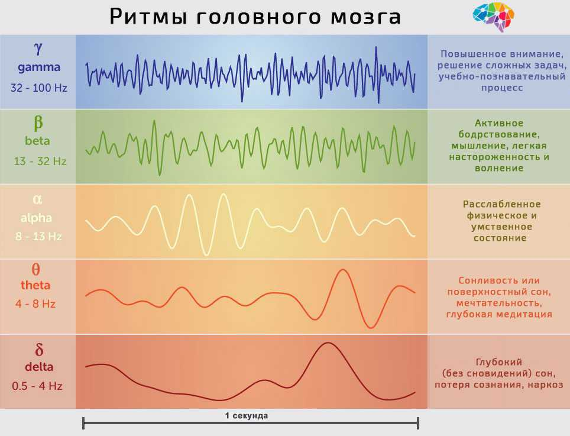

Что такое гипнопедия?
Данным методом люди пытались пользоваться с давних времен. В классической науке активно применять гипнопедию начали в 20-м веке. В разное время ученые проводили десятки экспериментов с целью изучения этого явления и его эффективности. Результаты оказались спорными. Одни исследователи отказывались признавать обучение во сне, другие – доказывали, что мозг реагирует на внешние раздражители и может их анализировать.
Наиболее результативными оказались исследования Чарльза Саймона и Уильяма Эммонса, которые в 1956 году провели ряд экспериментов с применением электроэнцефалографии. Они следили за ритмами головного мозга и установили, что новая информация им не усваивается, так как участники экспериментов не могли воспроизвести ее после пробуждения.
Исключение составили только те случаи, когда электроэнцефалограф регистрировал альфа-ритмы головного мозга – частоты от 8 до 14 Гц. Однако такой ритм характерен для состояния спокойного бодрствования, например, когда человек находится в темном помещении с закрытыми глазами. Так что, фактически он не спит.
Из-за исследований Эммонса и Саймона интерес к гипнопедии угас. Такой метод обучения посчитали бесполезным и невозможным. Но в 21-м веке ученые снова начали активно изучать этот вопрос, так как наука существенно продвинулась в области работы мозга, цикличности сна и т.д.
Интересные результаты получены исследователями Института имени Вейцмана в 2012 г. Эффективность обучения во сне остается мало изученным вопросом. Однако опытным путем удалось выяснить, что у спящего человека могут формироваться условные рефлексы.
Нюхательная реакция относится к категории невербальных. Ощущая приятный запах, мы обычно принюхиваемся сильнее. Неприятный запах заставляет органы нюха снизить активность. Так, испытуемым во время сна подавались разные запахи, сопровождающиеся определенными звуками.
Чувствуя приятный аромат, человек начинал дышать глубже и наоборот. Эксперимент проводился несколько раз. Вскоре для изменения дыхания достаточно было лишь услышать тот самый звук. Причем такая реакция сохранялась даже в режиме бодрствования.
Что происходит с мозгом во сне?
Сон состоит из быстрой и медленной (глубокой) фаз. Они чередуются – так образуются циклы. Активность мозга снижается в глубокой фазе. При этом происходит расслабление тела, восстанавливаются физические силы.
Термин «гипнопедия» происходит из древнегреческого языка и обозначает обучение во сне. Это специальная методика, которая, по мнению некоторых ученых, позволяет мозгу воспринимать, анализировать, запоминать и воспроизводить информацию во время сна. При этом ее подача происходит в звуковом формате.
А в быстрой фазе мозг, наоборот, активно работает. В это время мы видим сновидения. Полученная за день информация тщательно анализируется и фильтруется. Мозг принимает решения, какие данные понадобятся человеку в дальнейшем, и «отправляет» их в долговременную память. Все остальное успешно забывается.
Простыми словами работу мозга во время сна можно назвать систематизацией и упорядочиванием. Получается, что происходит обработка ранее полученной информации, а не новой. Именно поэтому выученный накануне материал утром «отскакивает от зубов», хотя вечером казалось, что ничего запомнить не получается.
Согласно большинству исследований, обучаться во сне нельзя. Наш мозг во время быстрой фазы сна обрабатывает информацию, полученную за день, систематизирует ее, анализирует опыт. А во сне он лишь способен реагировать на разные стимулы, такие как звуки и запахи.